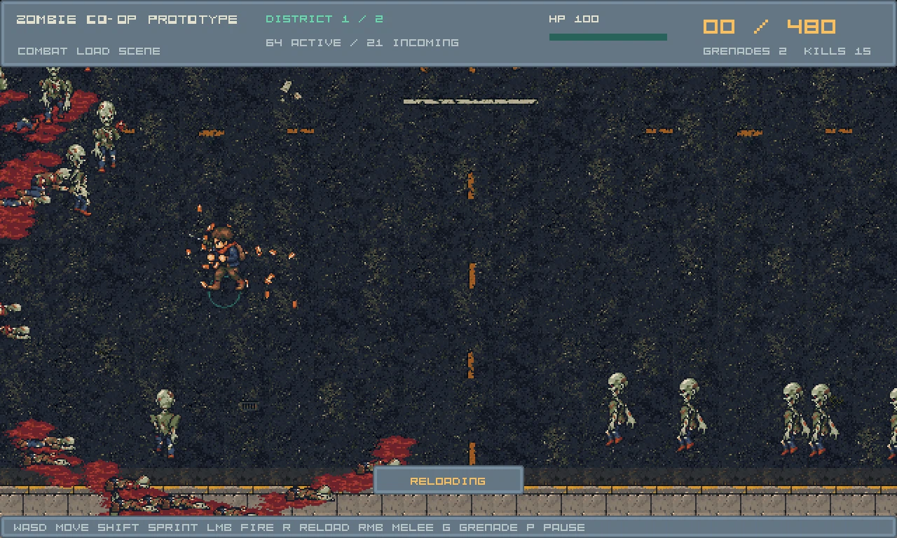
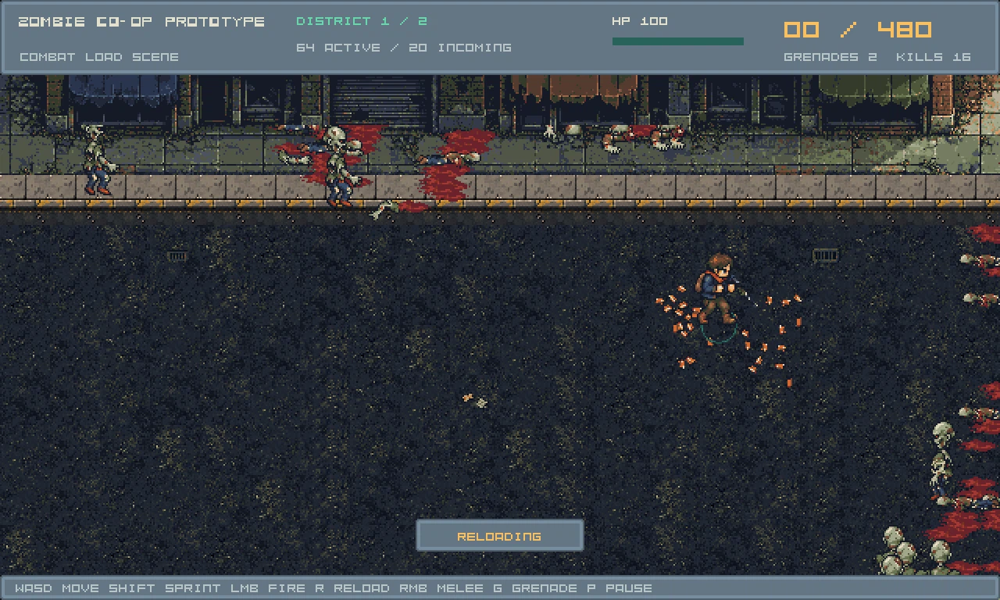

Independent visual QA: before and after
AI image/source review, 2026-10-10. The scoped opaque-patch/road-fragment correction is accepted.
Full urban-environment polish still needs changes. Anchored visual assessment: 40/100 before, 65/100 after.
This is not a human playtest, a statistical quality measurement or a gameplay score. All screenshots are preserved raw captures.
Baseline report004 ·
Re-review005: findings and hashes
Same east/south camera location
 Original900,450 fixture with the same world camera and actor/VFX profile. Before: opaque horizontal asphalt patches and cut scene cells. After: one compatible ground family, transparent road decals and flush surface detail.
Original900,450 fixture with the same world camera and actor/VFX profile. Before: opaque horizontal asphalt patches and cut scene cells. After: one compatible ground family, transparent road decals and flush surface detail.
Revised native Tiled overview
 Ground continuity is repaired. Right facade is a whole-strip reflection of the left source, so unique district identity remains provisional.
Ground continuity is repaired. Right facade is a whole-strip reflection of the left source, so unique district identity remains provisional.
Revised actual core encounter
 Existing gameplay objects remain. Crossing segments join; road paint no longer replaces the asphalt background.
Existing gameplay objects remain. Crossing segments join; road paint no longer replaces the asphalt background.
Revised west/south encounter

Player/walker/VFX silhouettes remain visible at actual encounter scale. Long road still needs deliberate place identity and selected border dressing.
Revised east encounter

Facades, drains and flush markings share the authored map pipeline; this still frame does not certify animation playback or human route readability.
Preserved baseline: full map and core
 Editor pins are authored point markers, not runtime holes.
Editor pins are authored point markers, not runtime holes.